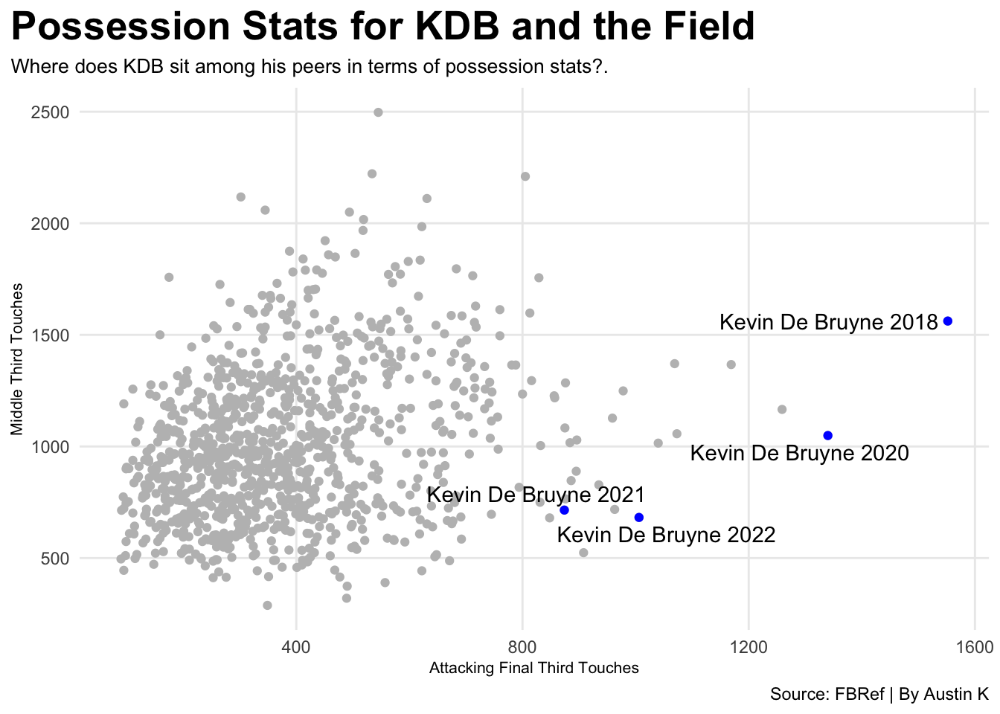
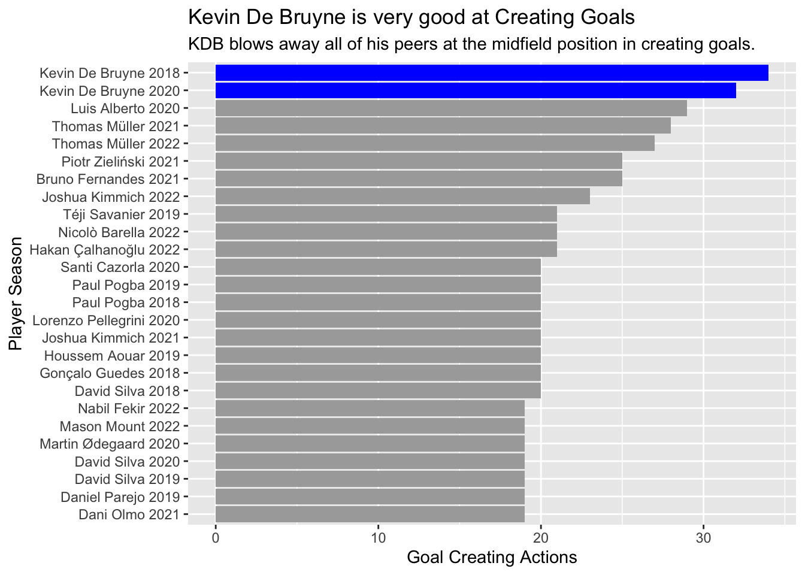

Code
library(tidyverse)
library(ggrepel)
library(worldfootballR)
library(gt)
big5_player_possession <- fb_big5_advanced_season_stats(season_end_year= 2016:2022, stat_type= "possession", team_or_player= "player") Austin Knippelmeir
November 29, 2022
This project is about who I believe to be the best midfielder in all of world football; Kevin De Bruyne. De Bruyne has played for Manchester City since the 2015-2016 season and he has all but dominated the Premier League and Europe since he arrived at City. This project will compare KDB against his fellow midfielders in the world and see where he stacks up against the world’s best. I did this by looking at possession, goal creation and goals and assists to find the answer to the question of who truly is the best midfielder in the world.
Midfielders <- big5_player_possession %>%
filter(Pos == "MF") %>% filter(Mins_Per_90 >= 20) %>%
mutate(TeamSeason = paste(Player, Season_End_Year)) %>%
filter(`Att 3rd_Touches` > 0)
KDB <- Midfielders %>% filter(Player == "Kevin De Bruyne")
ggplot() +
geom_point(data=Midfielders, aes(x=`Att 3rd_Touches`, y=`Mid 3rd_Touches`), color="grey") +
geom_point(data=KDB, aes(x=`Att 3rd_Touches`, y=`Mid 3rd_Touches`), color="blue") +
geom_text_repel(data=KDB, aes(x=`Att 3rd_Touches`, y=`Mid 3rd_Touches`, label=TeamSeason)) +
labs(
x="Attacking Final Third Touches",
y="Middle Third Touches",
title="Possession Stats for KDB and the Field",
subtitle="Where does KDB sit among his peers in terms of possession stats?.",
caption="Source: FBRef | By Austin K"
) +
theme_minimal() +
theme(
plot.title = element_text(size = 20, face = "bold"),
axis.title = element_text(size = 8),
plot.subtitle = element_text(size=10),
panel.grid.minor = element_blank(),
plot.title.position = "plot"
) 
This scatterplot looks at possession stats such as attacking final 3rd touches as well as middle 3rd touches which are huge aspects of midfielders who are expected to hold the ball and be the keys in link up play as teams move the ball through the middle of the pitch into the attacking 3rd. In these aspects KDB is excellent.
ggplot() +
geom_bar(data=GCA, aes(x=reorder(PlayerSeason, GCA_GCA), weight=GCA_GCA), fill="dark grey") +
geom_bar(data=KDB2, aes(x=PlayerSeason, weight=GCA_GCA), fill="blue") +
labs( x="Player Season",
y="Goal Creating Actions",
title="Kevin De Bruyne is very good at Creating Goals",
subtitle="KDB blows away all of his peers at the midfield position in creating goals.",
caption="Source: FBRef | By Austin K" +
theme_minimal() +
theme(
plot.title = element_text(size = 20, face = "black"),
axis.title = element_text(size = 8),
plot.subtitle = element_text(size=10),
panel.grid.minor = element_blank(),
plot.title.position = "plot"
) ) +
coord_flip() 
This bar chart takes a look at goal creating actions which are things such as passes, runs, dribbles and other factors that help lead to a goal, this may not be a direct assist but it was an “action” that helped lead to a goal being scored. As you can see KDB sits at the top in this category well above his peers in midfield which shows his creative skills and instincts that help him being so successful at generating goals for his team.
big5_player_glsast %>%
filter(Pos=="MF" & Min_Playing > 3000) %>%
top_n(10, wt=`G+A_Per`) %>%
select(Player, Season_End_Year, Pos, Squad, `G+A_Per`) %>%
arrange(desc(`G+A_Per`)) %>%
gt() %>%
cols_label(
Season_End_Year = "Season",
`G+A_Per` = "Goals and Assists per 90",
Pos = "Position",
Squad = "Squad"
) %>%
tab_header(
title = "Where does KDB Rank in Goals and Assists per 90",
subtitle = "KDB ranked against his peers in midfield at producing goals and assists."
) %>% tab_style(
style = cell_text(color = "black", weight = "bold", align = "left"),
locations = cells_title("title")
) %>% tab_style(
style = cell_text(color = "black", align = "left"),
locations = cells_title("subtitle")
) %>%
tab_source_note(
source_note = md("**By:** Austin Knippelmeir | **Source:** FBRef"))%>%
tab_style(
locations = cells_column_labels(columns = everything()),
style = list(
cell_borders(sides = "bottom", weight = px(3)),
cell_text(weight = "bold", size=12)
)) %>%
tab_style(
style = list(
cell_fill(color = "blue"),
cell_text(color = "black")
),
locations = cells_body(
rows = Player == "Kevin De Bruyne")
)| Where does KDB Rank in Goals and Assists per 90 | ||||
| KDB ranked against his peers in midfield at producing goals and assists. | ||||
| Player | Season | Position | Squad | Goals and Assists per 90 |
|---|---|---|---|---|
| Bruno Fernandes | 2021 | MF | Manchester Utd | 0.87 |
| Riyad Mahrez | 2016 | MF | Leicester City | 0.83 |
| Mesut Özil | 2016 | MF | Arsenal | 0.74 |
| Dele Alli | 2017 | MF | Tottenham | 0.74 |
| Kevin De Bruyne | 2018 | MF | Manchester City | 0.70 |
| Christian Eriksen | 2017 | MF | Tottenham | 0.66 |
| Paul Pogba | 2019 | MF | Manchester Utd | 0.66 |
| Marek Hamšík | 2017 | MF | Napoli | 0.65 |
| Luis Alberto | 2020 | MF | Lazio | 0.61 |
| Sergej Milinković-Savić | 2022 | MF | Lazio | 0.61 |
| By: Austin Knippelmeir | Source: FBRef | ||||
This table takes a look at goals and assists per 90 minutes for midfielders. KDB sits in the top five with his 2018 season which was one of his best since donning a City shirt. Goals and assists are not the most important stat but for an attacking midfielder such as De Bruyne those are the results that you are looking for that come from the advanced stats which favor him over many of his peers.
Overall with this project I set out to see if Kevin De Bruyne was the best midfielder in football and I feel that after comparing him to his midfield peers with a variety of stats that are especially important to midfielders that he is in fact the best midfielder in the world with all that he does at a high level. City’s success has been in no small part to the contributions of KDB and his consistent high level play during his time in a blue shirt.